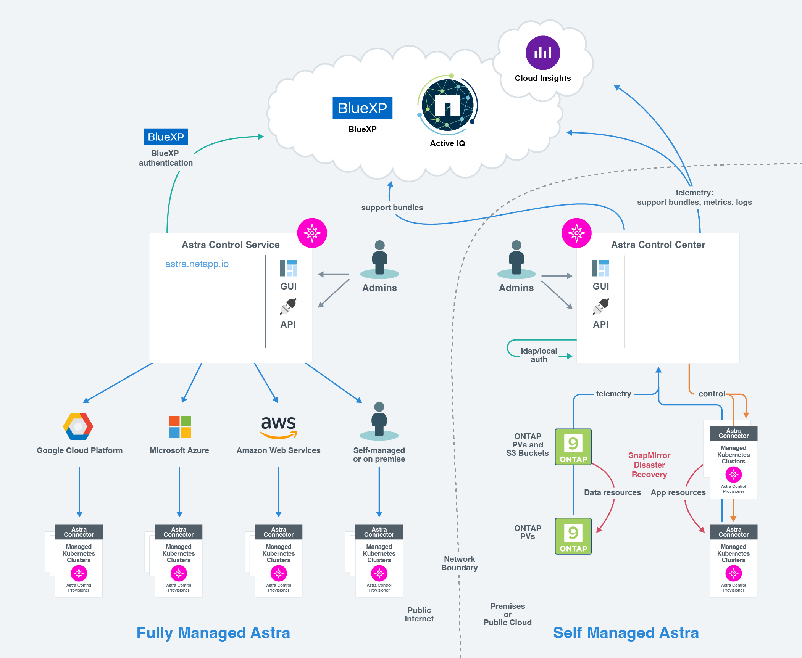

Más información sobre Astra Control
 Sugerir cambios
Sugerir cambios
Astra Control es una solución de gestión del ciclo de vida de los datos de aplicaciones de Kubernetes que simplifica las operaciones de aplicaciones con estado y te ayuda a almacenar, proteger y mover tus cargas de trabajo de Kubernetes entre entornos híbridos y multinube.
Funcionalidades
Astra Control ofrece funcionalidades cruciales para la gestión del ciclo de vida de los datos de las aplicaciones Kubernetes:
Tienda:
-
Aprovisionamiento de almacenamiento dinámico para cargas de trabajo en contenedores
-
Cifrado de datos en tránsito desde contenedores a volúmenes persistentes
-
Replicación entre regiones y zonas
Proteger:
-
Detección automatizada y protección compatible con las aplicaciones de toda una aplicación y sus datos
-
Recuperación instantánea de una aplicación desde cualquier versión de snapshot según las necesidades de su organización
-
Rápida recuperación tras fallos entre zonas, regiones y proveedores de cloud
Mover:
-
Completa movilidad de aplicaciones y datos en y entre clústeres y clouds de Kubernetes
-
Clones instantáneos de aplicaciones y datos completos
-
Migración de aplicaciones con un solo clic a través de una API e IU web consistentes
Arquitectura
La arquitectura de Astra Control permite que los departamentos de tecnología proporcionen funcionalidades de gestión de datos avanzadas que mejoran tanto la funcionalidad como la disponibilidad de las aplicaciones de Kubernetes, simplifica la gestión, la protección y el movimiento de cargas de trabajo en contenedores entre clouds públicos y entornos en las instalaciones. y proporciona funcionalidades de automatización a través de su API de REST y SDK, lo que permite un acceso mediante programación para una integración perfecta con los flujos de trabajo existentes.
Astra Control es nativo de Kubernetes, lo que permite flujos de trabajo de protección de datos que utilizan recursos personalizados y siguen siendo compatibles con las API y el SDK existentes. La protección de datos nativa de Kubernetes ofrece importantes ventajas; al integrarse sin problemas con las API y los recursos de Kubernetes, la protección de datos puede convertirse en una parte inherente del ciclo de vida de la aplicación mediante las herramientas GitOps o CI/CD existentes de una organización.

Astra Control se basa en cuatro componentes complementarios:
-
Astra Control: Astra Control es el servicio de gestión centralizado para todos los clústeres gestionados, proporcionando cargas de trabajo orquestadas para la protección y movilidad de aplicaciones en la nube y on-premises, así como las siguientes capacidades:
-
Vista combinada de varios clústeres y clouds
-
Protección de flujos de trabajo orquestados
-
Visualización y selección granular de recursos
-
-
Astra Connector: Astra Connector cuenta con Astra Control para proporcionar una conexión segura a cada clúster gestionado, ofreciendo la ejecución local de las operaciones programadas independientemente del estado de conexión, así como las siguientes capacidades:
-
Ejecución local de operaciones programadas independientemente del estado de conexión
-
Operaciones locales que distribuyen y optimizan el uso de los recursos del sistema de Astra en todos los clústeres
-
Instalación local que permite el acceso con menos privilegios al clúster para mejorar la seguridad
-
-
Astra Control Provisionador: Astra Control Provisionador ofrece funcionalidad de aprovisionamiento CSI central y capacidades avanzadas de administración de almacenamiento para una mayor configuración de seguridad y recuperación ante desastres, así como las siguientes capacidades:
-
Aprovisionamiento de almacenamiento dinámico para cargas de trabajo en contenedores
-
Gestión de almacenamiento avanzada:
-
Cifrado en tránsito de datos desde contenedor a VP
-
Funcionalidad de SnapMirror Cloud con replicación entre zonas y regiones
-
-
-
Recursos personalizados de Astra: Los recursos personalizados utilizados en cada clúster proporcionan un enfoque nativo de Kubernetes para ejecutar las operaciones localmente, simplificando la integración con otras herramientas y automatización compatibles con Kubernetes, además de proporcionar las siguientes capacidades:
-
Integración directa de herramientas del ecosistema y flujos de trabajo de automatización
-
Primitivos de nivel inferior que permiten flujos de trabajo personalizados
-
Modelos de puesta en marcha
Astra Control está disponible en dos modelos de puesta en marcha.

-
Astra Control Service: Un servicio gestionado por NetApp que proporciona gestión de datos para aplicaciones de clústeres de Kubernetes en varios entornos de proveedores de cloud, así como clústeres de Kubernetes autogestionados.
-
Astra Control Center: Software autogestionado que proporciona gestión de datos para aplicaciones de clústeres de Kubernetes que se ejecutan en su entorno local. Astra Control Center también se puede instalar en entornos de varios proveedores de cloud con un entorno de administración del almacenamiento Cloud Volumes ONTAP de NetApp.
| Servicio de control Astra | Astra Control Center | |
|---|---|---|
¿Cómo se ofrece? |
Como un servicio cloud totalmente gestionado de NetApp |
Como software que se puede descargar, instalar y gestionar |
¿Dónde está alojado? |
En un cloud público que elija NetApp |
En su propio clúster de Kubernetes |
¿Cómo se actualiza? |
Gestionado por NetApp |
Usted administra cualquier actualización |
¿Cuáles son las distribuciones de Kubernetes compatibles? |
|
|
¿Cuáles son los back-ends de almacenamiento compatibles? |
|
|